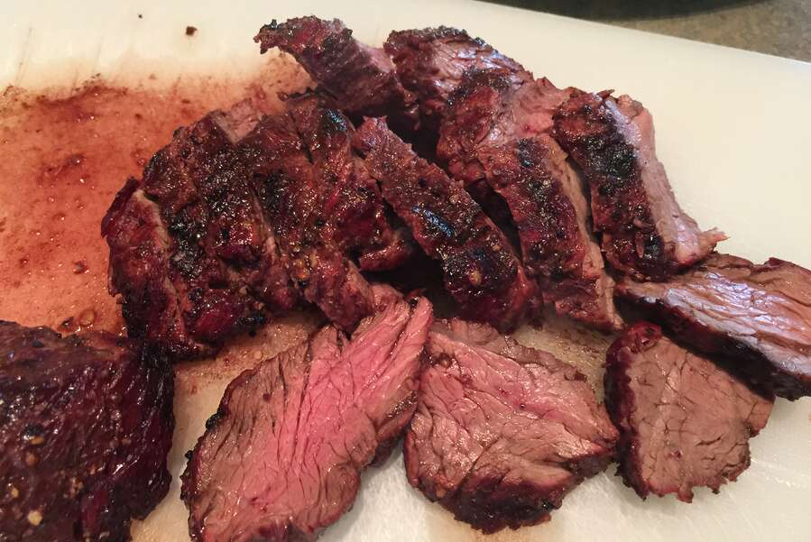

Butchers Steak

Steak that is great pan cooked, broiled, or grilled.
Ingredients
- 1 (2 pound) butchers steak
- salt and freshly ground black pepper
- 1 tablespoon clarified butter
- 2/3 cup chicken broth
- 2 teaspoons balsamic vingeaar
- 2 tablespoons cold butter, cut into cubes
- salt to taste
Steps
- Preheat oven to 350 degrees F (190 degrees C). Grease one 9 inch square baking pan.
- Whisk together the flour, sugars, baking soda, cocoa and salt. Stir in the vegetable oil, vanilla and vinegar. Pour batter into the prepared pan and pour the water over the top. Draw a fork through the batter to just barely mix.
- Bake at 350 degrees F (175 degrees C) for 35 minutes. Let cool slightly and serve warm.